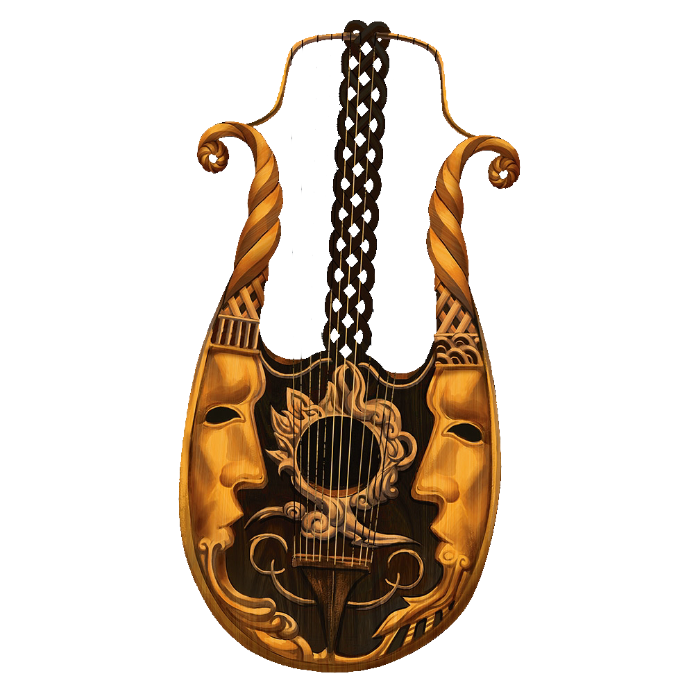

Welcome
Currently under development
About

Date of the Game
30.07.2021 r.
PArticipants

Caise
| DM |
Lost Dwarf

Lilith Nightray
| Player |
Elf | Bard | Thia

M.
| Player |
Red Dragon | Rogue | Korinn

J.
| Player |
Human | Mage
Story
Three brave heroes met together in the tavern of the city called Neverwinter. Dragon lady outcasted by her kind, loyal to her party members. She was seeking revenge on those who betrayed her. Thia, an elf who spent most of her life playing on lyre and who more than anything wanted something, someone to call her own. She always traveled from town to town with a smile on her face and a fire of recklessness in her heart. With them on the adventure went a reasonable and cautious (not really) mage, whose name got lost on the cards of the history.
You’d expect them to be mainly after treasures, but they were searching for their missing fourth party member who went to his hometown, never to go back, never to send them a single message.
On their way, their first encounter was mage's aunt Gertrude to which he rushed on his own. This fight was hard and the oh-so-poor man got heavily wounded. From then on, they only moved together through the city. They encountered a wererat with quite characteristic feet, who had an army of rats waiting for his call. Luckily a bard knew a song or two and put those pesky animals to sleep, leaving their confused leader vulnerable to attack. Then, completely drenched with water, a scarecrow emerged from a nearby lake. Its sharp claws were ready to swing at anyone in their range. The only problem was, hay is flammable so smart mage firstly made it dry, just to end it with a good old fireball (actually just hands covered in fire). That wasn’t the end of it yet, barrels with cucumbers suddenly came. Dragon hid among trash, mage tried to fight them with stones, while bard took out her frying pan to play tennis with them. It wasn’t long before they wanted to go to the nearby forest, knowing well that to get to the dwarf’s hometown, they had to walk through it and enter the volcano to finally enter its underground. Their way got blocked by Kraken 1, quite unhappy with this name. Unfortunate creature didn’t know just how strong our heroes were. Before it knew it, party members took its remains to later sell it for a good price.
The forest wasn’t also a peaceful place. One quite unpleasant pixie came, so they did their best to scare it away. Mage by accident interrupted an orc who was cleaning his beloved bow. Well, this orc was quite unlucky that is to say. When the heroes got back to the place where he was, there was just one lonely bush. It wanted an identity on its own, so it asked adventurers to pick its name. It came to love the one suggested by the elf, so from then on, it was called Kognibata (kostka, ognisty, herbata). Forest was also a place where they met a monster, who, unknowingly to them, left something in their inventory. Dragon slayed Green Dragon down, dealing a final hit to fulfill her revenge. She may be loyal, but there’s a thin line. Since they drove her out, she wasn’t afraid to cut them down. She was now much stronger. Strong enough to fight them. Missing by breath some ogre’s swamp, they greeted the volcano’s wrath with a big stomp.
Fights continued, our heroes still alive, everything went well, so they went reckless with their plan. With Tome, Mimic and Fiery Lyre they went further down. This hellish place had its own guard. The Hellish dog was ready to attack. What it didn’t expect was for heroes to have experience with playing Pokemon. After lowering his health, Dragon took an iron chain out and with it made the doggo succumb. As they walked further down, some suspicious person said they’ll show them a shortcut. Our heroes didn’t trust them even one bit, walking away, ignoring his pleas. Next some chimera lady offered to help them, instantly capturing Thia’s heart. She quickly agreed together with the mage. As the lady opened her hand, light shimmered showing a ring. That’s how two ladys engaged, while the wizard pleased himself with only cash. What a beautiful love born from a trust, it is what they longed for and fortunately both found. Their way underground got blocked yet again by a suspicious guy. He took off his cape with an angry roar. He must have been a Hulk's Walmart brother, with drool coming from his mouth, he swung his pickaxe-like weapon. Gross as he was, hidden laugh was what made him realize that. Now he was but an easy mark, swiftly taken down by a friendship arc.
Finally our heroes arrived at their destination, Gauntlgrym opened before them. In the first chamber they entered, golden light shone in the darkness. It was a treasure, a pile of gold. On said pile laid a chest full of wonders. The mage wanted it badly, yet couldn’t manage to open it. Just as they thought of taking the next step, the owner of this treasure returned. Meanwhile, it turned out what monster left them. Egg cracked with 3 coins and a young owlbear emerged. It thought of the bard as his mom, so she took care of it with all her heart. Back to the main story, shall we? Creature covered from head to toe in gold walked in. Noticing his goldie being taken, it fury he went, making them shaken. He loved his riches too much, so they turned into what made him meet his demise. Music echoed through them, vibration so strong to make his ears bleed, while Mage wanted to make his gold disappear. Once he was slain, they went to some strange lair, full of skulls with fog in the air. Skulls used it as a chance to carry out a surprise attack. Even with such disadvantage, adventurers didn’t have a reason to be afraid. No enemy was able to take them out so far, as they left battles with only some minor injuries. This fight was no different. Weapons crushed skulls down, leaving only dust. From nowhere, a hungry brain came, with its tentacles ready to suck out their brains. He made them see the tragedies of their lives, to strip them of their intelligence. Korinn lost her memory of how to wield her weapon, leaving her confused and vulnerable. This time the task was a tad bit harder, but still this brain got turned into mush. Suddenly a rumbling sound came and the floor shook stronger and stronger with each passing second. On the other side of the long corridor appeared a giant boulder. They didn’t have much room for thoughts, Korinn took her hook out, Thia grabbed her and they both jumped into the chasm, leaving the mage to figure out how to save himself with a fishing rod. Luckily he managed to cast it in time, launching himself into the air, just enough to avoid sure death. It cost each one of them losing one precious coin. Everything happened so quickly they weren’t able to see well the person who was running before the boulder, only hearing shriek as someone surely fell into the abyss followed by enormous stone. No one knew from where, but as if nothing just happened, a jester came running to heroes. He begged them to give him a bit of their time. One performance and nothing more. Adventurers started to get tired with all those fights, so with no trouble they even offered their assistance. Mage made his clones to imitate the audience, while bard played songs to complete this show. Jester was so touched, he gave them three coins in total, which he found on his way to them. They watched him going back, until he disappeared in the darkness. The Mage felt like it was a good time to spend his savings. From all available to him options, he had chosen a pseudodragon to great displeasure of the bard. Next chamber seemed normal at first, until a rug tried to turn them into wet puddles. Wrong decision they’ve made, as they trapt themselves together with flame. A bit burned, but still determined, they walked further in search of their friend.
They found themselves in a room big enough to be mistaken for a dragon’s lair if it weren’t for lack of any treasures. The only object inside was some, at least three times as large as a person black ball. The door closed behind them with a thud. Believing in themselves, the heroes decided to approach a strange ball. That thing was faster than them. Tons of black tentacles shoot towards them before they could even make a step forward. At tentacles' ends, myriad of eyes opened, glaring straight at those who dared interrupt its slumber. With one swift move, they reached them. Screams escaped from their throats, as their worst memories played before their eyes. Bard made a cry sounding fairy similar to the word ‘Lyre’. In the middle of black sphere, an enormous eye opened, adding ominousicity to this thing. Mental attacks were equally damaging as physical attacks. It would be the end of our adventures if it weren't for their strong mentality which greatly weakened the impact from these attacks. Heroes tried their best to attack this monster, but all their doings seemed to be done in vain. They exchanged attack after attack. Party members started to get really beaten up. Mage and bard were at their last breath. And then, the monster sent his tentacles straight at the poor human, with great power sending him to the other side. That was the end of him.
Grim Reaper stood before him with his scythe in his hands, ready to turn him into ended story. But then, he stopped. Death offered Mage a chance to continue his life, but in exchange, he must give him all of his coins. It was embarrassing to say, but his electricity got cut off because he didn't pay his bill and now was desperate for money. Human had one coin on him, so he instantly agreed on Death's terms. He got back straight into the middle of a fight.
After another round or so, the same thing happened to Thia. She had two coins, so Grim Reaper was more than happy to let her go. To prevent real death, Korinn gave one of her coins to the Mage. Fight continued, but now, it finally seemed like they were getting close to slaying this monstrosity. Just one more… Mass of black grease erupted from the monster as a weapon pierced its giant eye. They achieved it! Gauntlgrym was free! Finally their adventure reached the end!
But wait… where's the dwarf?
That must have been him… the one who fell into the chasm… Happiness mixed together with grief… Elf had now new responsibilities, she found what she was missing. Mage widened his knowledge. Dragon fulfilled her revenge. Only this unlucky dwarf died just like that. Korinn, now free and without a nagging goal, decided to go and retrieve his corpse. Thia longed to see her fiancée, while mage disappeared into the mist.
That's how their adventure came to the end, what happened further is another tale to tell. Has all of this happened for real? That's for you to judge. Until next time.
